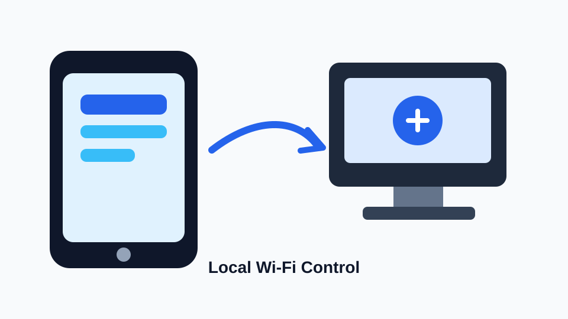

رمز اقتران
الحاسوب يعرض رمز اقتران مؤقت، والهاتف يستخدمه لأول اتصال.
تحكم محلي بالكامل
تطبيق يحول الهاتف إلى ماوس وكيبورد وريموت ميديا للحاسوب عبر شبكة Wi-Fi المحلية، بدون حسابات أو خدمات خارجية.

Windows
cd desktop-server
python .\src\server.pyAndroid
مشروع Android موجود داخل `mobile-app/`، وأدوات البناء المحلية مثبتة. تم إنتاج APK تجريبي بنجاح داخل `mobile-app/app/build/outputs/apk/debug/app-debug.apk`، واختباره على Android Emulator عبر `10.0.2.2:8765` مع تراكباد محسّن وتمرير بإصبعين وزر بحث تلقائي عن السيرفر.
mobile-app/أمان محلي
الحاسوب يعرض رمز اقتران مؤقت، والهاتف يستخدمه لأول اتصال.
بعد الاقتران يحفظ السيرفر token خاصا بالجهاز الموثوق، وتخفي واجهة Android قيمة token عند عرض الاستجابة.
يمكن إيقاف التحكم عبر `control_stop` وإعادة تفعيله عبر `control_start`.
اختبار محلي
python .\src\test_client.py ping
python .\src\test_client.py status
python .\src\test_client.py trusted-devices --device-id test-phone --token YOUR_TOKEN
python .\src\test_client.py control-stop --device-id test-phone --token YOUR_TOKEN
python .\src\test_client.py control-start --device-id test-phone --token YOUR_TOKEN
python .\src\test_client.py shutdown-computer --device-id test-phone --token YOUR_TOKEN --confirm-shutdown